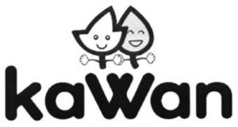

Trade Mark Journal No.2025/029 18 July 2025
WO0000001851435 (29,30)
Office of origin: Malaysia
Date of International Registration:25 November 2024
Date of designation in the UK:
25 November 2024

- Class 29
- Meat, fish, poultry and game; meat extracts; preserved, frozen, dried and cooked fruits and vegetables; jellies, jams, compotes; eggs; milk, cheese, butter, yogurt and other milk products; oils and fats for food; tofu; French fries; hash browns; green peas, frozen; sweet corn, frozen; spinach, frozen; green beans, frozen; chicken nuggets; grated potato nuggets; potato croquettes; vegetable patties; falafel; burger meat patties; chopped meat burger patties; chopped meat patties; hamburger meat patties; meat burger patties; meat burgers [patties]; seitan patties [meat substitutes]; seitan burger patties [meat substitutes]; meat products being in the form of burger meat patties; textured vegetable protein for use as a meat extender; formed textured vegetable protein for use as a meat substitute; imitation meat prepared from soya beans [textured soy protein]; imitation meat prepared from vegetables [textured vegetable protein]; meat extenders in the nature of textured vegetable protein; meat extenders in the nature of unformed textured vegetable protein; meat substitutes prepared from soya beans [textured soy protein]; meat substitutes prepared from vegetables [textured vegetable protein]; unformed textured vegetable protein for use as a meat extender; meatballs; dal; dal [prepared dish]; pre-cooked curry dishes; pre-cooked curry stew; garlic butter; garlic-based spreads; spreads made from vegetable oils; vegetable spreads; vegetable-based spreads; margarine; fish cakes; dumplings with meat substitute prepared from vegetables; milk and milk products; cheese sticks; fish croquettes; fish fillets; fish fritters; fish sausages; fish fingers; calamari in batter; vegetable-based food; vegetable-based snack foods; vegetable-based snacks; vegetable-based prepared meals for toddlers; fish-based food; fish-based foodstuffs; fruit-based food; fruit-based spreads; meat-, fish-, fruit- or vegetable-based food; meat-based food; meat-based, fish-based, fruit-based or vegetable-based food; meat-based snack foods; meat-based spreads; potato-based snack foods; cuttlefish, not live; edible oils and fats.
- Class 30
- Coffee, tea, cocoa and substitutes therefor; rice; pasta; noodles; tapioca and sago; flour and preparations made from cereals; bread, pastries and confectionery; chocolate; ice cream, sorbets and other edible ices; sugar, honey, treacle; yeast, baking powder; salt; seasonings; spices; preserved herbs; vinegar, sauces and other condiments; ice (frozen water); paratha [flatbread]; chapatti; naan bread; stuffed bread; pancakes; naan; cheese naan bread; naan [yeast-leavened flatbread]; puff pastry; flat bread; tortillas; pita bread; baozi [steamed stuffed buns]; steamed stuffed buns; xiaolongbao [steamed stuffed buns]; bread; croissants; pizza crust; pizza; samosas; samosa [pies]; filo dough; filo pastries; filo pastry dough; curry puffs; puff pastry dough; puff pastry shells; spring rolls; spring roll pastry; pastry (spring roll sheets); glutinous rice balls; waffles; pancake batter; cakes; mooncakes; rice cakes; puddings; pies; lasagna; tarts; cookies; fried rice; stir-fried noodles; rice noodles; gyoza [stuffed dumplings]; Chinese stuffed dumplings [gyoza, cooked]; wonton [stuffed dumplings]; curry sauce; spring rolls with vegetable proteins.
Kawan Food Manufacturing Sdn. Bhd.
Representative: Charmayne Ong Poh Yin, Level 8, Wisma UOA Damansara,, 50, Jalan Dungun, Damansara Heights, 50490 Kuala Lumpur, MALAYSIA